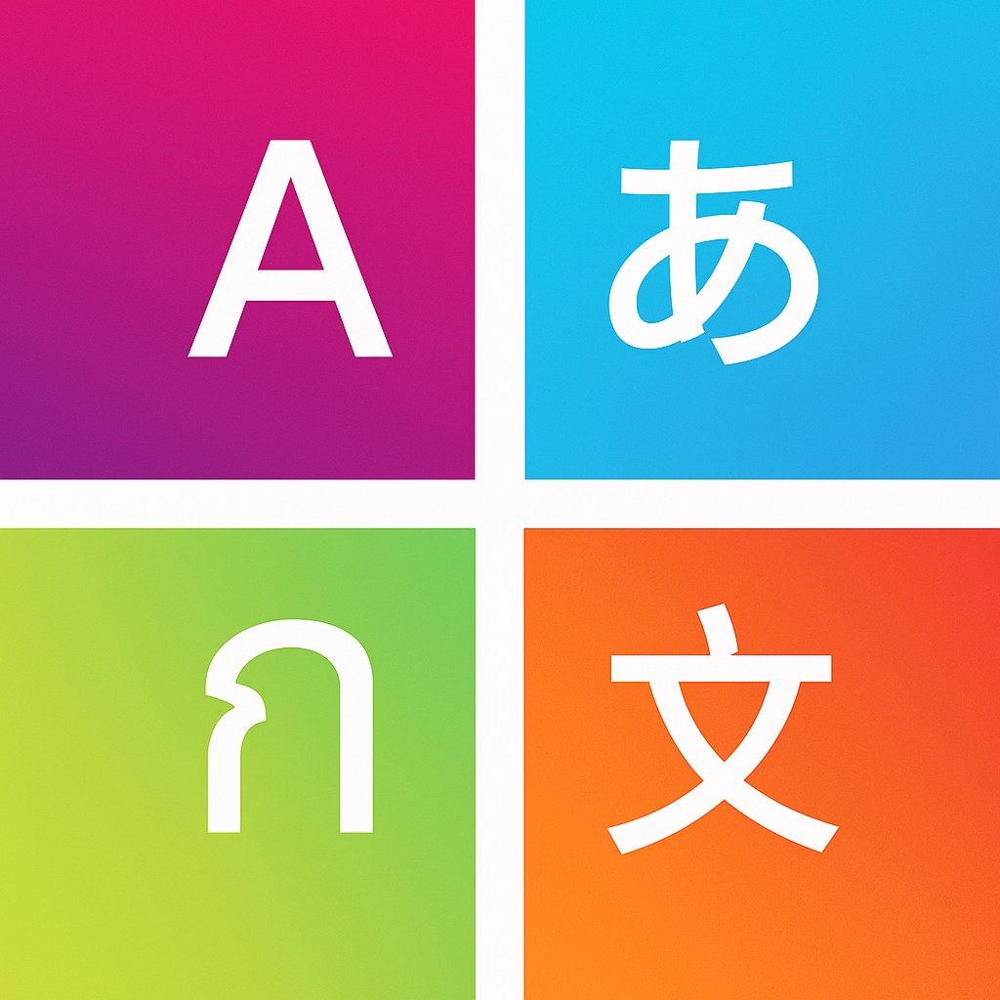

KOTORI
多言語翻訳LINEボット
LINEグループの会話を、自然に多言語翻訳するボット
KOTORIは、LINEグループに招待するだけで使える多言語対応の翻訳LINEボットです。
言語の違いで会話が止まることなく、いつものLINEの流れのままコミュニケーションできます。
まずはKOTORIを友だち追加
KOTORIは「入れるだけ」です
KOTORIに特別な登録や設定は必要ありません。
アプリの切り替えも、コピペも不要
こんな場面で使われています
KOTORIの特長
まずは、グループに入れてみてください
KOTORIが役に立つかどうかは、実際に会話の中で使ってみるのが一番早いです。
グループに招待して会話を続けるだけ
もっと使いたい方へ
利用頻度が高いグループや、継続的に使いたい方向けの拡張利用も用意しています。
Pro利用について
詳しくは、こちらをご覧ください。